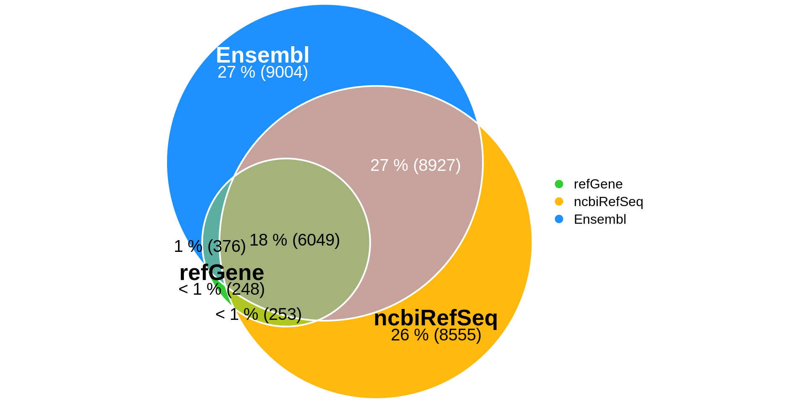
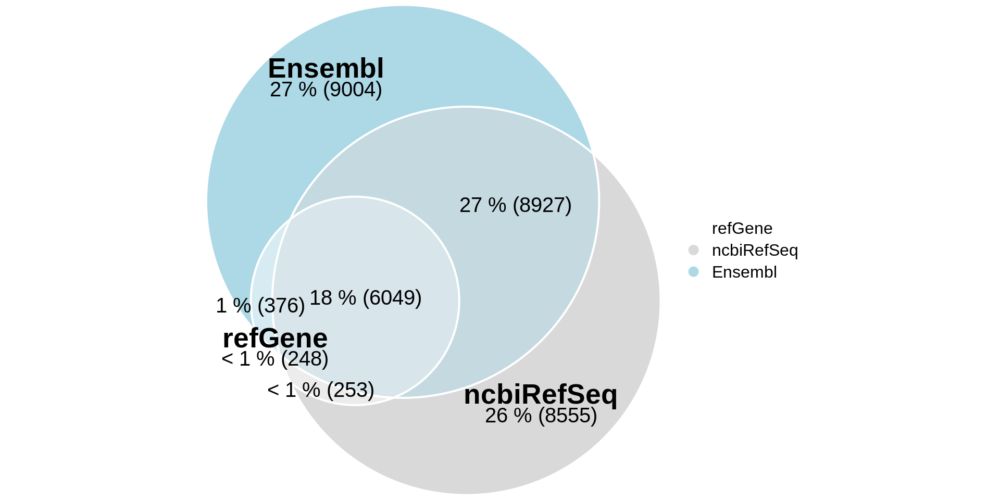
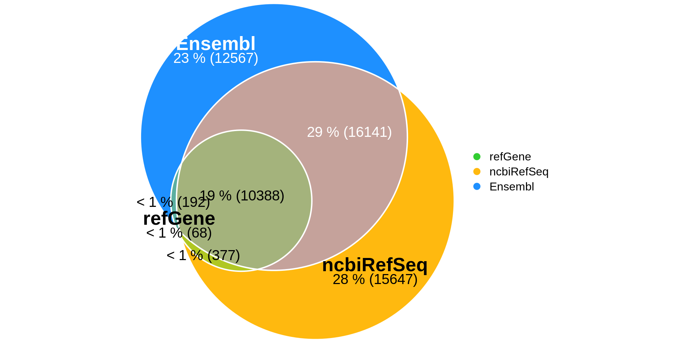
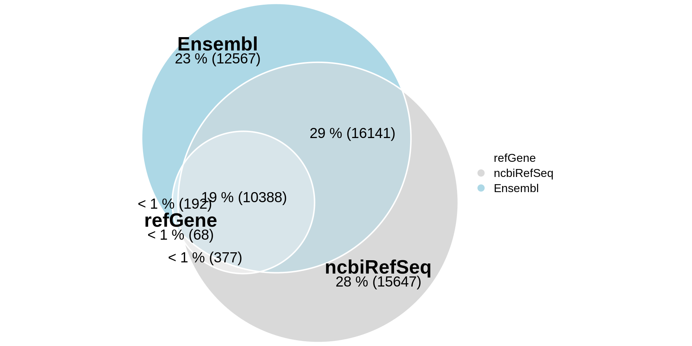

scAnnotatiONT paper
2021-07-13
1 Impact of discrepant reference annotations on scRNA-seq analyses
1.1 Discrepancies in reference annotations
1.1.1 Define paths
echo "export pathRef='data/raw/references/annotations/ucsc/'" >> .rvars
echo "export pathOutput='output/01-Impact-ref-annotation-scRNA/'" >> .rvarssource .rvars
mkdir -p $pathRef
mkdir -p $pathOutput1.1.2 Get GTF files
source .rvars
wget https://hgdownload.soe.ucsc.edu/goldenPath/galGal6/bigZips/genes/galGal6.ensGene.gtf.gz \
-P $pathRef
wget https://hgdownload.soe.ucsc.edu/goldenPath/galGal6/bigZips/genes/galGal6.ncbiRefSeq.gtf.gz \
-P $pathRef
wget https://hgdownload.soe.ucsc.edu/goldenPath/galGal6/bigZips/genes/galGal6.refGene.gtf.gz \
-P $pathRef
gunzip ${pathRef}*.gtf.gzsource .rvars
echo "export ref1='${pathRef}galGal6.ensGene.gtf'" >> .rvars
echo "export ref2='${pathRef}galGal6.ncbiRefSeq.gtf'" >> .rvars
echo "export ref3='${pathRef}galGal6.refGene.gtf'" >> .rvars1.1.3 Basic stats on GTF files
1.1.3.1 Fix GTF RefGene file
When running mikado, we found out that some exons overlap.
This causes mikado to throw an error such as “start must be less than end,” and it stops running.
We use gffread -T to fix this issue.
source .rvars
gffread -T $ref3 > ${ref3%.*}_fixed.gtf
sed -i '/ref3/c\' .rvars
echo "export ref3='${ref3%.*}_fixed.gtf'" >> .rvars
source .rvars
echo $ref3## data/raw/references/annotations/ucsc/galGal6.refGene_fixed.gtf1.1.3.2 Infer genes from GTF files
This step will both infer “gene” feature in the annotation files and convert GTF format to GFF3. Without this step, we would end up with only CDS, transcript, exons features.
# Make sure gffread version is >= v0.12.1
source .rvars
echo ',genes,transcripts' > ${pathOutput}counts_table.csv
for gtf in $ref{1..3}
do
echo $gtf
filename=$(basename -- "$gtf")
# Create GFF3 with all features / only genes / only transcripts
gffread -E --keep-genes $gtf -o- > ${pathRef}${filename%.*}.gff3
awk '$3~/gene/' ${pathRef}${filename%.*}.gff3 > ${pathRef}${filename%.*}_genes.gff3
awk '$3~/transcript/' ${pathRef}${filename%.*}.gff3 > ${pathRef}${filename%.*}_transcripts.gff3
# Save count results (number of genes and transcripts in each annotation)
echo $filename | tr '\n' ',' >> ${pathOutput}counts_table.csv
wc -l ${pathRef}${filename%.*}_genes.gff3 | cut -d' ' -f1 | tr '\n' ',' >> ${pathOutput}counts_table.csv
wc -l ${pathRef}${filename%.*}_transcripts.gff3 | cut -d' ' -f1 >> ${pathOutput}counts_table.csv
done1.1.3.3 Run mikado stats
source .rvars
sed -i '/pathOutput/c\' .rvars
echo "export pathOutput='output/01-Impact-ref-annotation-scRNA/mikado_stats/'" >> .rvars
source .rvars
echo $pathOutput
mkdir -p $pathOutput## output/01-Impact-ref-annotation-scRNA/mikado_stats/source .rvars
for gtf in $ref{1..3}
do
echo $gtf
filename=$(basename -- "$gtf")
mikado util stats $gtf ${pathOutput}${filename%.*}_stats.tsv
done
asm_collect.py ${pathOutput}*_stats.tsv > ${pathOutput}main_stats.tsv1.1.4 Comparison with GffCompare
source .rvars
sed -i '/pathOutput/c\' .rvars
echo "export pathOutput='output/01-Impact-ref-annotation-scRNA/gffcompare/'" >> .rvars
source .rvars
echo $pathOutput
mkdir -p $pathOutput## output/01-Impact-ref-annotation-scRNA/gffcompare/source .rvars
gffcompare -r $ref1 -o ${pathOutput}gffcmp_ensGene_ncbiRefSeq $ref2
gffcompare -r $ref1 -o ${pathOutput}gffcmp_ensGene_refGene $ref3
gffcompare -r $ref2 -o ${pathOutput}gffcmp_ncbiRefSeq_ensGene $ref1
gffcompare -r $ref2 -o ${pathOutput}gffcmp_ncbiRefSeq_refGene $ref3
gffcompare -r $ref3 -o ${pathOutput}gffcmp_refGene_ncbiRefSeq $ref2
gffcompare -r $ref3 -o ${pathOutput}gffcmp_refGene_ensGene $ref11.1.4.1 Make GffCompare results machine readable
src/utilities/make_gffcmp_stats_readable.sh1.1.5 Venn Diagrams
All Venn diagrams are produced via Intervene. This tool is based on bedtools interset.
Euler diagrams are obtained with eulerr.
1.1.5.1 Gene level
source .rvars
sed -i '/pathOutput/c\' .rvars
echo "export pathOutput='output/01-Impact-ref-annotation-scRNA/venn_diagrams/genes/'" >> .vars
source .rvars
mkdir -p $pathOutputsource .rvars
echo "export genesGff1='${pathRef}galGal6.ensGene_genes.gff3'" >> .rvars
echo "export genesGff2='${pathRef}galGal6.ncbiRefSeq_genes.gff3'" >> .rvars
echo "export genesGff3='${pathRef}galGal6.refGene_fixed_genes.gff3'" >> .rvarssource .rvars
echo $genesGff1
echo $genesGff2
echo $genesGff3
intervene venn -i $genesGff1 $genesGff2 $genesGff3 \
--figtype png \
--save-overlaps \
--bedtools-options f=0.5,r,s \
--output ${pathOutput}
wc -l ${pathOutput}sets/*.bed | \
awk -v OFS="\t" '$1=$1' > ${pathOutput}venn_counts.tsv## data/raw/references/annotations/ucsc/galGal6.ensGene_genes.gff3
## data/raw/references/annotations/ucsc/galGal6.ncbiRefSeq_genes.gff3
## data/raw/references/annotations/ucsc/galGal6.refGene_fixed_genes.gff3
## usage: intervene venn [options]
## intervene <subcommand> [options] venn: error: argument -o/--output: expected one argument
## wc: 'sets/*.bed': Aucun fichier ou dossier de ce typevenn_intersect <- euler(c("refGene" = 248,
"ncbiRefSeq" = 8555,
"Ensembl" = 9004,
"ncbiRefSeq&Ensembl" = 8927,
"ncbiRefSeq&refGene" = 253,
"Ensembl&refGene" = 376,
"ncbiRefSeq&Ensembl&refGene" = 6049))
plot(venn_intersect,
quantities = list(type = c("percent", "counts"),
col = c("black", "black", "white"),
fontsize = 15),
labels = list(col = c("black", "black", "white"),
fontsize = 20),
edges = list(col = "white", lex = 2),
fills = c("limegreen", "darkgoldenrod1", "dodgerblue"),
legend = list(side = "right"))
plot(venn_intersect,
quantities = list(type = c("percent", "counts"),
col = c("black", "black", "black"),
fontsize = 15),
labels = list(col = c("black", "black", "black"),
fontsize = 20),
edges = list(col = "white", lex = 2),
legend = list(side = "right"))
1.1.5.2 Transcript level
source .rvars
sed -i '/pathOutput/c\' .rvars
echo "export pathOutput='output/01-Impact-ref-annotation-scRNA/venn_diagrams/transcripts/'" >> .rvars
source .rvars
mkdir -p $pathOutputsource .rvars
echo "export trxGff1='${pathRef}galGal6.ensGene_transcripts.gff3'" >> .rvars
echo "export trxGff2='${pathRef}galGal6.ncbiRefSeq_transcripts.gff3'" >> .rvars
echo "export trxGff3='${pathRef}galGal6.refGene_fixed_transcripts.gff3'" >> .rvarssource .rvars
intervene venn --i $trxGff1 $trxGff2 $trxGff3 \
--figtype png \
--save-overlaps \
--bedtools-options f=0.5,r,s \
--output ${pathOutput}
wc -l ${pathOutput}sets/*.bed | \
awk -v OFS="\t" '$1=$1' > ${pathOutput}venn_counts.tsv##
## Generating a 3-way "venn" diagram. Please wait...
##
##
## Done! Please check your results @ output/01-Impact-ref-annotation-scRNA/venn_diagrams/transcripts/.
## Thank you for using Intervene!path_output <- "output/01-Impact-ref-annotation-scRNA/venn_diagrams/transcripts/"
venn_counts <- read.table(file = paste0(path_output, 'venn_counts.tsv'),
header = FALSE,
col.names = c('count', 'filePath'),
sep = '\t')
strX <- strsplit(x = venn_counts[1,2], split = '/')[[1]]
#venn_counts %>% mutate(fileName = strsplit(x = filePath, split = '/'))[[1]][length(strX)] venn_intersect <- euler(c("refGene" = 68,
"ncbiRefSeq" = 15647,
"Ensembl" = 12567,
"ncbiRefSeq&Ensembl" = 16141,
"ncbiRefSeq&refGene" = 377,
"Ensembl&refGene" = 192,
"ncbiRefSeq&Ensembl&refGene" = 10388))
plot(venn_intersect,
quantities = list(type = c("percent", "counts"),
col = c("black", "black", "white"),
fontsize = 15),
labels = list(col = c("black", "black", "white"),
fontsize = 20),
edges = list(col = "white", lex = 2),
fills = c("limegreen", "darkgoldenrod1", "dodgerblue"),
legend = list(side = "right"))
plot(venn_intersect,
quantities = list(type = c("percent", "counts"),
col = c("black", "black", "black"),
fontsize = 15),
labels = list(col = c("black", "black", "black"),
fontsize = 20),
edges = list(col = "white", lex = 2),
legend = list(side = "right"))
1.2 Impact of reference choice on scRNA-seq analyses
data_seurat <- CreateSeuratObject(counts_wide)
run nextflow quantif